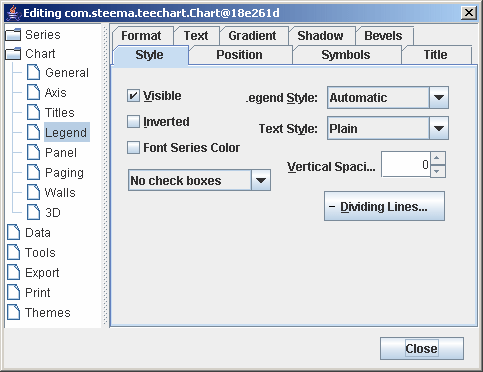

이전 | 다음
|
|
목차 이전 | 다음 |
이 자습서에서 요점으로 다루어진 기술에 대한 몇가지 예제를 위해서는 설치된 폴더내 Example 폴더에 있는 코딩된 범례 컨트롤을 보십시오.
| Contents |
범례 컨트롤(Legend control)
스타일 탭(Style Tab)
|
범례 매개변수들은 차트 에디터와 차트 탭, 범례 페이지를 이용하면 액세스가 가능합니다.
 | 범례 매개변수들입니다. 보다 자세한 정보를 원하시면 범례 클라스 도움말을 보십시오. |
범례 스타일(Legend Style)
범례의 스타일 기본값인 "자동"은 차트에서 시리즈가 오직 하나만 있으면 시리즈 포인트 값을 범례에 넣습니다. 차트가 하나 이상의 시리즈를 가지고 있다면, "자동"은 시리즈 이름을 범례에 넣습니다. 에디터에서 드롭다운 콤보 박스를 사용하면 기본값과 다른 값을 지니게 됩니다. 만약 범례 스타일을 값을 디스플레이 하는 것으로 바그러나꾸고 차트에 시리즈가 하나 이상 있다면, TeeChart Pro는 첫번째 시리즈의 값을 디스플레이 합니다. 사용자 지정 옵션을 사용하면 디스플레이를 변경할 수 있습니다.
tChart1.getLegend().setLegendStyle(LegendStyles.LASTVALUES); //Puts the last value of each Series in the Legend box
텍스트 스타일(Text Style)
가능한 범례 텍스트 스타일의 목록을 보기 위해서는 TextStyle 속성을 보십시오.
(e.g. Showing value as a percentage of total, etc).
정렬(Alignment)
정렬 속성을 이용하면, 위쪽, 아래쪽, 왼쪽, 오른쪽의 4가지 위치가 가능해집니다. 오른쪽이 기본값입니다. 범례의 기본값 위치는 언제나 차트의 바깥쪽입니다.
차트 크기 조정(Resize Chart)
차트 크기 조정 속성이 가능하지 않도록 되어 있을 때는, 범례를 차트 프레임 영역 안에서 그려지게 해 줍니다. 몇몇 범례 위치 시키기에 관련된 필요를 충족시키고자 할 때, 차트 프레임과 연관되어서 보다 나은 범례 위치시키기는 범례 여백 속성을 사용하여 가능해집니다.
여백(HorizMargin & VertMargin)
여백 속성 값을 바꾸는 것은 차트 프레임을 범례와 관련해서 움직이게 해줍니다. 그러나 차트 프레임을 범례와 연결지어 움직였다고 해서 여백 속성 값이 바뀌는 것은 아닙니다. Margin 속성값을 변경하는 것은 범례에 관계된 차트의 프레임을 이동시킬 수 있습니다. 물론 그 반대는 아닙니다. Margin 속성에 음수값을 주는 것은 (차트의 사각 영역의 크기를 증가시키는) 범례 위로 차트를 이동할 것입니다. 그러나, 이 속성은 차트위로 범례를 재위치시키는 것은 의도하지는 않습니다. 범례 사용자 정하기 안에서 이 기술을 사용하는 것이 낫습니다.
사용자 지정(Custom position)
이 확인 상자는 차트 크기 조정 속성을 불가능하게 하고 차트 캔버스 어디에서나 픽셀로 범례를 위치할 수 있도록 해 줍니다.
Example
tChart1.getLegend().setCustomPosition(true); tChart1.getLegend().setTop(100); tChart1.getLegend().setLeft(100);
범례가 수평으로 정렬됐을때(top or bottom), 열의 수가 일일이 열거될수 있다.:
tChart1.getLegend().setMaxNumRows(3);
기본적으로 최대열값은 0으로, 범례에 사용할수있는 값을 열에 필요한 모든값이 사용됨을 보여준다는 의미다.
숫자폭 메소드를 사용하여 범례에서 칼라박스 폭을 설정할수있다.
예제
//move the colour boxes to the right of the value list tChart1.getLegend().getSymbol().setPosition(LegendSymbolPosition.RIGHT); //set the boxes as continuous tChart1.getLegend().getSymbol().setContinuous(true); //Make the boxes wider tChart1.getLegend().setColorWidth(40); //Hide the Pen of the line between the boxes tChart1.getLegend().getDividingLines().setVisible(false);
 |
 |